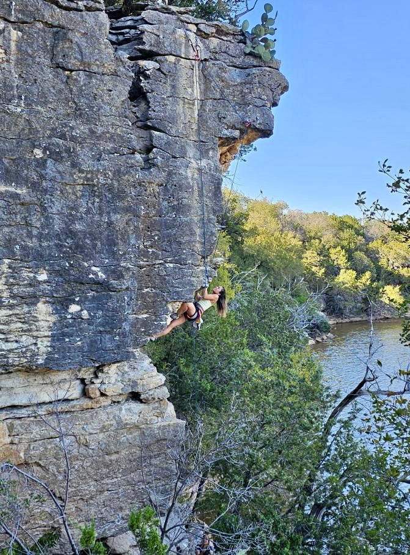
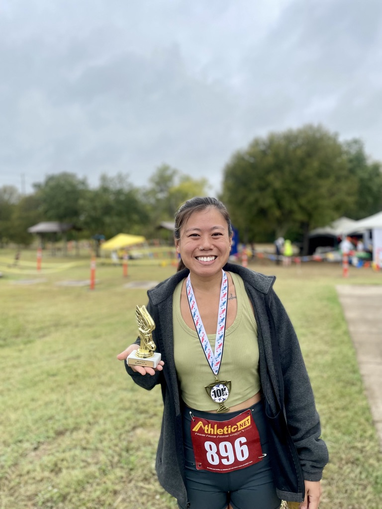
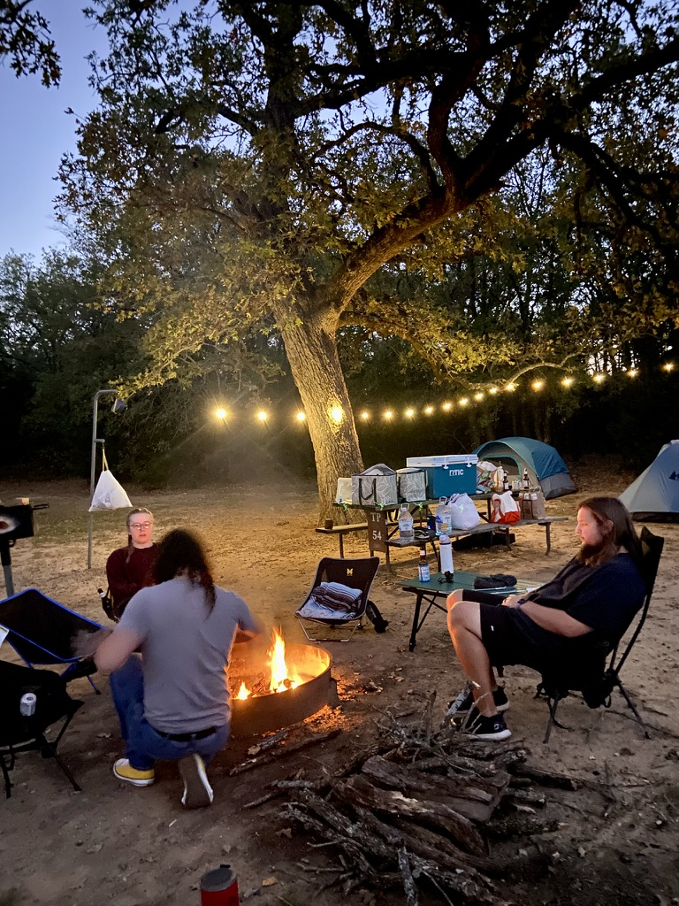

All my hobbies surround being active and outdoors. They are healthy ways that I have found to relieve stress, and feel fully present.
I have been climbing since 2015. It has been something that has pushed me to be more bold, and challenege me physically and mentally.
I have only recently begun my running journey. I am currently signed up for 5 races this year, with the last one being a 50k. The dedication and discipline I have put towards training is something that I can feel proud of.
The main thing I love out camping is spending quality time with those who go with me. There is nothing more peaceful than unplugging, and being fully surrounded by nature and friends.
